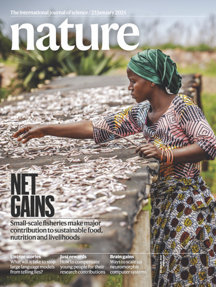
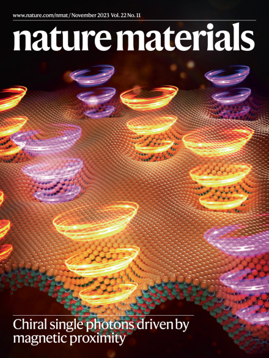

| 2024 - |
Princeton University, Princeton, NJ, USA Ph.D. Student in Quantum Science and Engineering, advised by Professor Ali Yazdani |
|---|---|
| 2018 - 2024 |
University of British Columbia, Vancouver, BC, Canada Bachelor of Applied Science in Engineering Physics, advised by Professor Joshua Folk |
| 2024 - Present | PQI Graduate Fellow | Professor Ali Yazdani, Princeton University |
|---|---|---|
| 2021 - 2024 | Undergraduate Research Assistant | Professor Joshua Folk, University of British Columbia (UBC) |
| 2019 - 2021 | Undergraduate Research Assistant | Professor Takamasa Momose, UBC |
| Professor Geordi Pang, University of Toronto | ||
| Professor Jeff Young, UBC |
| 1. | Waters, D., Okounkova, A., Su, R., Zhou, B., Yao, J., Watanabe, K., Taniguchi, T., Xu, X., Zhang, Y.H., Folk. J., Yankowitz, M. Chern Insulators at Integer and Fractional Filling in Moiré Pentalayer Graphene. Phys. Rev. X 15, 011045 (2025). https://doi.org/10.1103/PhysRevX.15.011045 | |
|---|---|---|
| 2. | Su, R., Waters, D., Zhou, B., K., Watanabe, K., Taniguchi, T., Zhang, Y.H., Yankowitz, M., Folk, J. Moiré-driven topological electronic crystals in twisted graphene. Nature 637, 1084–1089 (2025). https://doi.org/10.1038/s41586-024-08239-6 |
 |
| 3. | Waters, D., Su, R., Thompson, E., Okounkova, A., Arreguin-Martinez, E., He, M., Hinds, K., Watanabe, K., Taniguchi, T., Xu, X., Zhang, Y.H., Folk, J., Yankowitz, M. Topological flat bands in a family of multilayer graphene moiré lattices. Nat. Commun. 15, 10552 (2024). https://doi.org/10.1038/s41467-024-55001-7 | |
| 4. | Su, R., Kuiri, M., Watanabe, K., Taniguchi, T., Folk, J. Superconductivity in twisted double bilayer graphene on WSe2. Nat. Mater. 22, 1332–1337 (2023). https://doi.org/10.1038/s41563-023-01653-7 |
 |
| 1. | Current-bias spectroscopy of in-plane magnetoresistance on the microtesla scale in twisted monolayer-trilayer graphene. APS March Meeting, Minneapolis, MN, March 3-8th (2024). |
|---|---|
| 2. | Moiré-localized flat bands in a family of twisted Bernal-stacked graphene multilayers. APS March Meeting, Minneapolis, MN, March 3-8th (2024). |
| 3. | Integer quantum anomalous Hall effect at fractional filling in twisted bilayer trilayer graphene. Quantropy Meeting, Zürich, Switzerland, January 25th (2024). |
| 4. | Superconductivity in twisted double bilayer graphene stabilized by WSe2. APS March Meeting, Las Vegas, NV, March 6-10th (2023). |
| 1. | Quantized anomalous Hall effect in twisted bilayer-trilayer graphene. Thouless Institute for Quantum Matter Winter Workshop, University of Washington, Seattle, January 13-15th (2024). |
|---|---|
| 2. | Superconductivity and Isospin Order in Twisted Double Bilayer Graphene on WSe2. Stewart Blusson Quantum Matter Institute (SBQMI) International Scientific Advisory Board Meeting, September 19-20th (2023). |
| 3. | Electronic Phases of Twisted Double Bilayer Graphene on WSe2. Canadian Institute for Advanced Research (CIFAR) Quantum Materials Program Spring School, Montreal, May 8-12th (2023). |
| 2025 | Princeton Quantum Initiative Graduate Fellowship. Princeton University. |
|---|---|
| 2023 | Edward G. Auld Prize in Engineering Physics. UBC. |
| Undergraduate Student Research Award. Natural Sciences and Engineering Research Council of Canada (NSERC). | |
| First Place Poster Award. International Scientific Advisory Board Meeting, SBQMI, UBC. | |
| 2022 | Trek Excellence Scholarship. UBC. |
| 2018 | Academic Bronze Medal. The Governor General of Canada. |